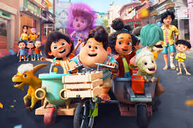
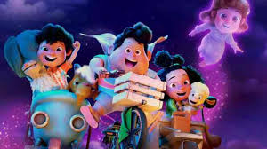

Film "Jumbo" bukan sekadar tontonan biasa. Ini adalah kisah menyentuh yang membahas pentingnya menerima perbedaan, kekuatan ikatan emosional, dan bagaimana cinta bisa tumbuh dari tempat yang tidak terduga. Film ini sarat makna dan cocok ditonton bersama teman-teman kantor untuk momen kebersamaan yang tak terlupakan.
Selain menyajikan cerita yang unik, film ini juga menampilkan sinematografi yang cantik dan akting luar biasa dari para pemainnya. Kombinasi humor, drama, dan kehangatan menjadikannya pilihan sempurna untuk mengisi malam kebersamaan.
 Dengan ini saya menyatakan bahwa saya telah menyelesaikan Tugas Praktikum Pemrograman Web untuk mata kuliah TTE-1 dengan sebaik-baiknya.
Segala kode HTML, CSS, dan elemen tambahan dalam tugas ini merupakan hasil kerja saya sendiri sebagai bagian dari proses pembelajaran.